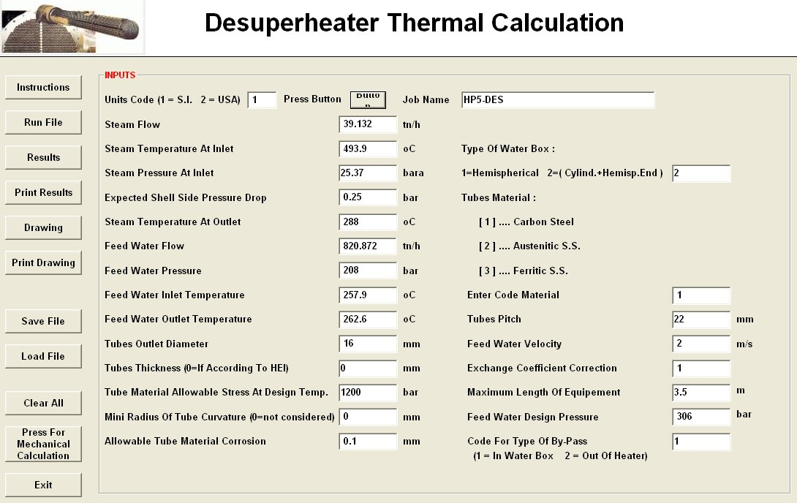
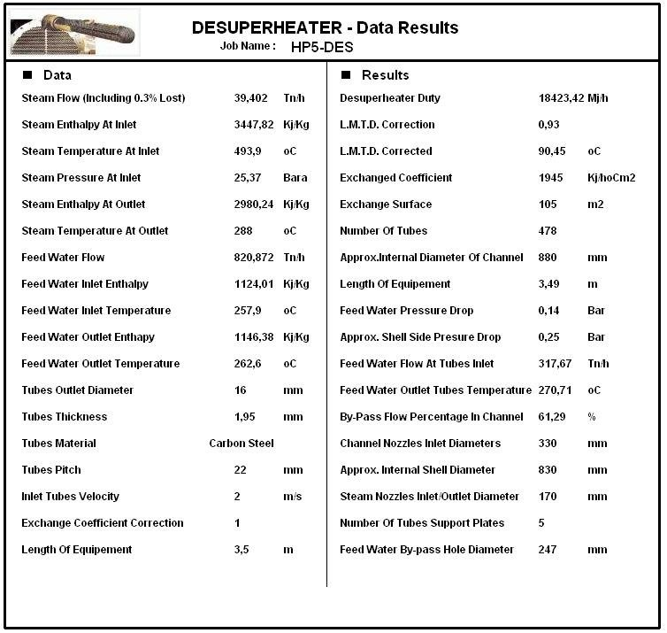
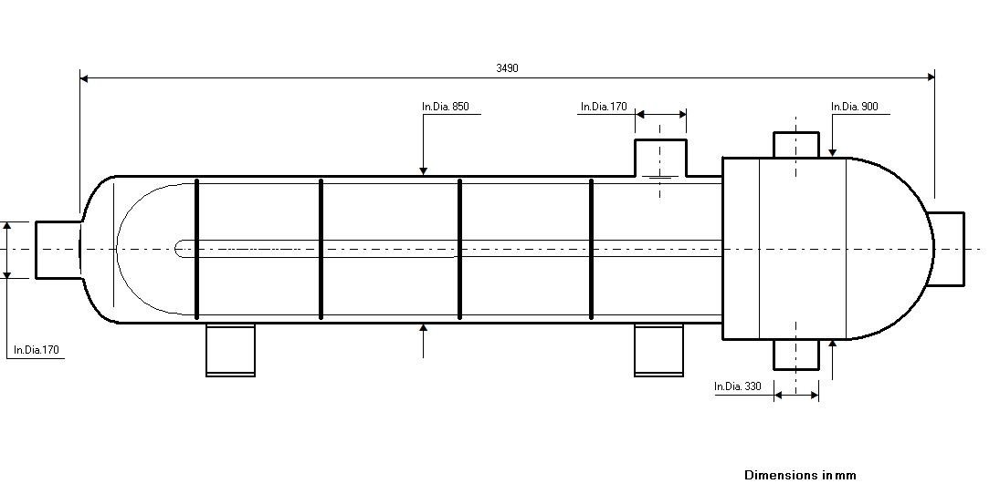
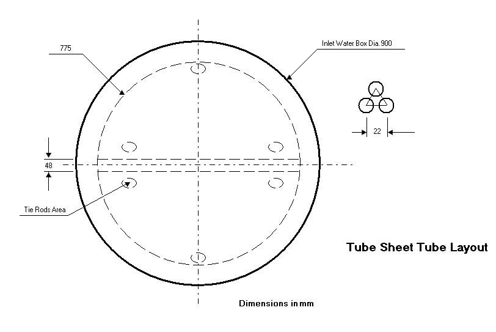
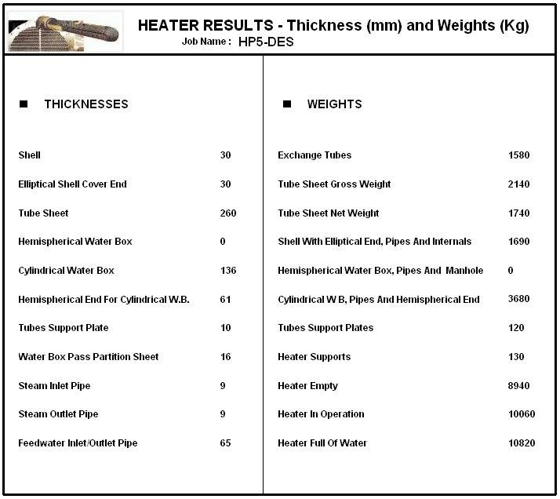

Desuperheater Design Software
Thermal and mechanical design of desuperheating units installed at the end of feedwater heater trains.
Desuperheating units for feedwater heater trains
This program is conceived specifically for desuperheating units: special heaters, normally installed at the end of the line of feedwater heater trains, with only a desuperheating surface. The thermal and mechanical design is similar to that of the other heaters, and the program also handles the feedwater by-pass.
Data entry
The input window collects the steam flow, inlet temperature and pressure, expected shell side pressure drop and steam outlet temperature, feedwater flow, pressure and inlet and outlet temperatures, tube diameter, thickness and pitch, feedwater velocity, tube material (carbon steel, austenitic or ferritic stainless steel), type of water box (hemispherical or cylindrical with hemispherical end), maximum length of equipment, feedwater design pressure and type of by-pass.

Thermal results
The results sheet gives the desuperheater duty, LMTD, exchange coefficient and surface, number of tubes, channel and shell diameters, length, feedwater and shell side pressure drop, feedwater flow through the tubes and by-pass percentage, nozzle diameters, number of support plates and by-pass hole diameter.

Drawings


Mechanical calculation and weights
The mechanical module calculates the thickness of the shell, elliptical cover end, tube sheet, water box, support plates and pipes, and the weights of the main parts, up to the heater weight empty, in operation and full of water.

Documentation
See the complete example with every input and results window in the program documentation:
Desuperheater – full documentation (PDF)Related programs
- Feedwater Heater – thermal and mechanical design of feedwater heaters per HEI
- Steam Transformer – steam transformer systems with desuperheater
- In-line Feedwater Heaters Performance – performance of a complete battery of up to six heaters
Condensers, feedwater heaters, deaerators, district heating, natural gas heaters and more, with a description of each program on the home page.
See all programs →